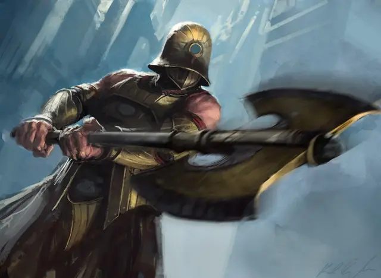

Великан Орзов
Orzhov Giant
Большой Великан, законно-злой

Класс Доспеха 18 (латы)
Хиты 84 (8к10 + 40)
Скорость 40 футов
| мод | спас | ||
|---|---|---|---|
| СИЛ | 23 | +6 | +6 |
| ЛОВ | 13 | +1 | +4 |
| ТЕЛ | 21 | +5 | +8 |
| мод | спас | ||
|---|---|---|---|
| ИНТ | 12 | +1 | +1 |
| МДР | 13 | +1 | +4 |
| ХАР | 8 | −1 | −1 |
Чувства тёмное зрение 60 футов, пассивное Восприятие 11
Языки Общий, Великаний
Опасность 6 (2300 опыта)
Бонус мастерства +3
Особенности
Фокус. Бонусным действием великан может выбрать целью видимое существо, в пределах 30 футов от себя, и сделать это существо своим фокусом. Цель остается в фокусе великана в течение 1 минуты или до тех пор, пока хиты цели или великана не опустятся до 0. Когда великан совершает бросок атаки против существа с своим фокусом, он добавляет к4 к своему броску атаки. Если великан атакует другую цель, пока у него есть фокус, он вычитает к4 из своего броска атаки
Действия
Мультиатака. Великан совершает две атаки Секирой.
Секира. . Рукопашная атака оружием: +9 к попаданию, досягаемость 10 фт., одна цель. Попадание: 25 (3к12 + 6) рубящего урона. Если великан Орзов совершает критическое попадание, он бросает кость урона трижды, а не дважды.
Камень. . Дальнобойная атака оружием: +9 к попаданию, дистанция 60/240 фт., одна цель. Попадание: 28 (4к10 + 6) дробящего урона.
Описание
Несколько великанов вступают в ряды Орзовского синдиката и служат охранниками, палачами и головорезами — мускулами гильдии. Присутствие великанов Орзов на рынках и улицах служит действенным напоминанием владельцам бизнеса о своевременности платежей.
Великаны
Великаны используют свои огромные размеры и силу, чтобы продвигать дело не менее чем четырех гильдий. В Легионе Боросов и Синдикате Орзов они хитрые солдаты. Великаны Культа Ракдоса и Кланов Груулов не менее эффективны, но им не хватает дисциплины.